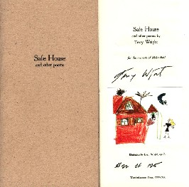

‚Üê Back to MarckBeggs.com | Arkansas Literary Forum archive, preserved as originally published‚Üê Back to MarckBeggs.com | Arkansas Literary Forum archive, preserved as originally published
‚Üê Back to MarckBeggs.com | Arkansas Literary Forum archive, preserved as originally published‚Üê Back to MarckBeggs.com | Arkansas Literary Forum archive, preserved as originally published|
Safe House by Terry Wright Wunderkammer Press, 2001  In his first two chapbooks, Fun and No Fun and No More Nature, and throughout his full-length collection, What the Black Box Said, Terry Wright has consistently established himself as the most experimental poet in Arkansas. In particular, his work demonstrates a paradoxical ability to both embrace and defy the conventions of poetry at once. Safe House continues this trend, focusing, in particular, on Wright's mastery of personae.This tiny eight-poem, hand-sewn volume collects voices ostensibly from the world of a young girl (including a childhood color illustration by Wright's daughter), but within the "safe house" exists the inherent strangeness of American childhood itself:
Indeed, it is a landscape permeated with clown wakes, crib deaths, and insecurity galore. And, as mentioned before, voices. All of the poems in this collection found their genesis in video and still images, so one can only hope that in the future, Wright will have the opportunity to publish his poems in a multi-media cd-rom edition, where the audience can experience the poems along with the images and Wright's extraordinary voice, but for now, the voices on the page will have to suffice. If nothing else, after spending some time within Wright's head, you'll never feel comfortable at a circus again:
Or watching television:
On more than one occasion, Wright's work has been attacked as too difficult or impersonal, but nothing could be further from the mark. His poems are deeply moving because they are uncompromisingly human, a condition often at its worse when it settles for the simple or the easily attainable. Wright's work is neither simple nor mere entertainment, but the reader who is willing to work at it will be rewarded with something greater: an active engagement with a brilliant mind.
|